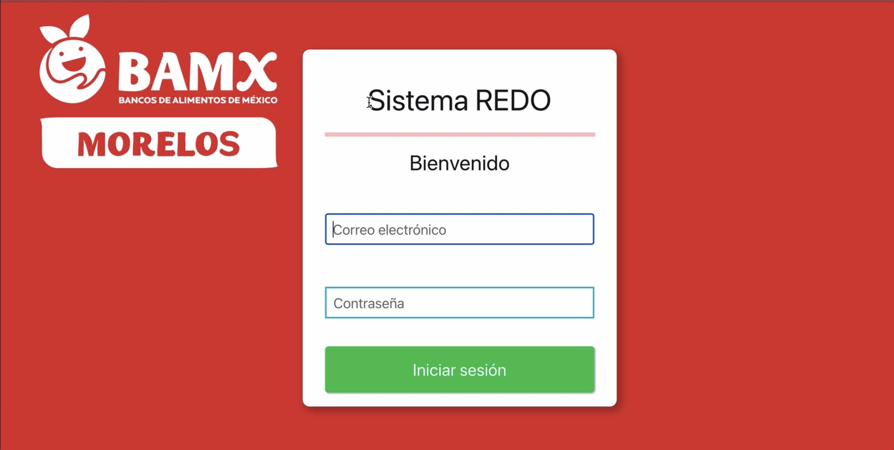
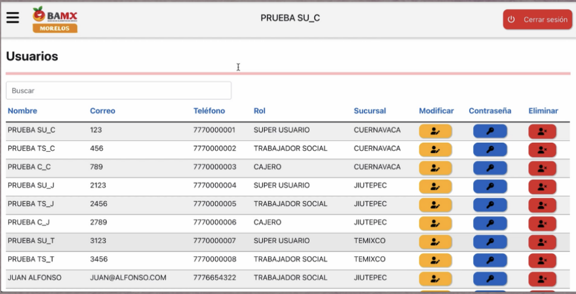
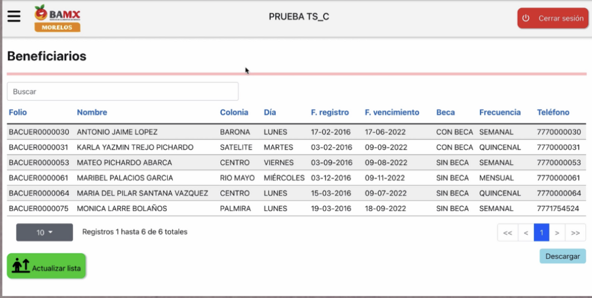
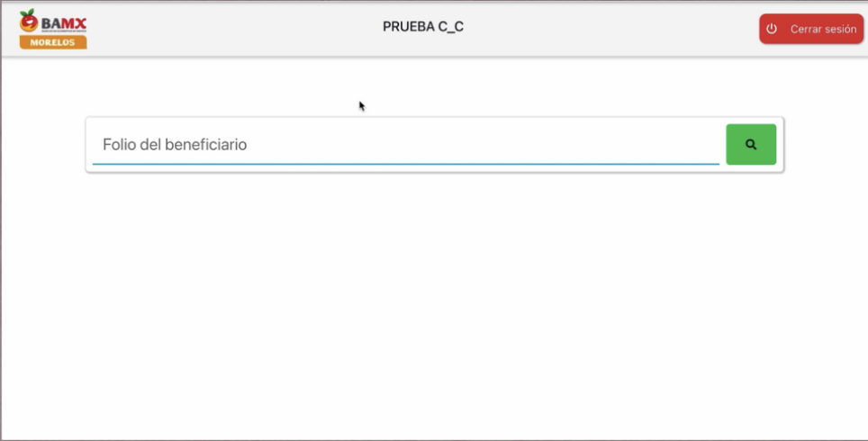

Foodbank webpage
Speed up the process of recollection of a food bank.
Given that the food bank of Mexico (BAMX) in Morelos provides a service for beneficiaries, the employees at BAMX need to have control of the operations in BAMX, therefore we created a website with three types of users:
- Admin: Manage users and visualize BAMX reports.
- Cashier: Register the attendance of the beneficiaries.
- Social Worker: Manage the of attendance beneficiaries, manage beneficiaries, manage petitions from beneficiary communities, and visualize reports.
My role: I assisted with the creation of API endpoints, performing comprehensive API testing using Jest, and verifying the optimal performance of the web page through the utilization of a web driver.


